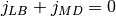

LBOutputScreen - controls screen output in LB-simulations¶
Child class derived from the abstract class espressopp.analysis.LBOutput.
It computes and outputs to the screen the simulation progress (finished step) and
controls mass flux conservation when using MD-to-LB coupling. Ideally, the sum of mass
fluxes should be zero, i.e. .
-
espressopp.analysis.LBOutputScreen(system, latticeboltzmann)¶ Parameters: - system – system object defined earlier in the python-script
- latticeboltzmann – lattice boltzmann object defined earlier in the python-script
Note
this class should be called from external analysis class espressopp.integrator.ExtAnalyze
with specified periodicity of invokation and after this added to the integrator. See an example for details.
Example to call the profiler:
>>> # initialise profiler (for example with the name outputScreen) with system and
>>> # lattice boltzmann objects as parameters:
>>> outputScreen = espressopp.analysis.LBOutputScreen(system,lb)
>>>
>>> # initialise external analysis object (for example extAnalysisNum1) with
>>> # previously created profiler and periodicity of invocation in steps:
>>> extAnalysisNum1=espressopp.integrator.ExtAnalyze(outputScreen,100)
>>>
>>> # add the external analysis object as an extension to the integrator
>>> integrator.addExtension(extAnalysisNum1)
-
espressopp.analysis.LBOutputScreen(system, latticeboltzmann) Parameters: - system –
- latticeboltzmann –